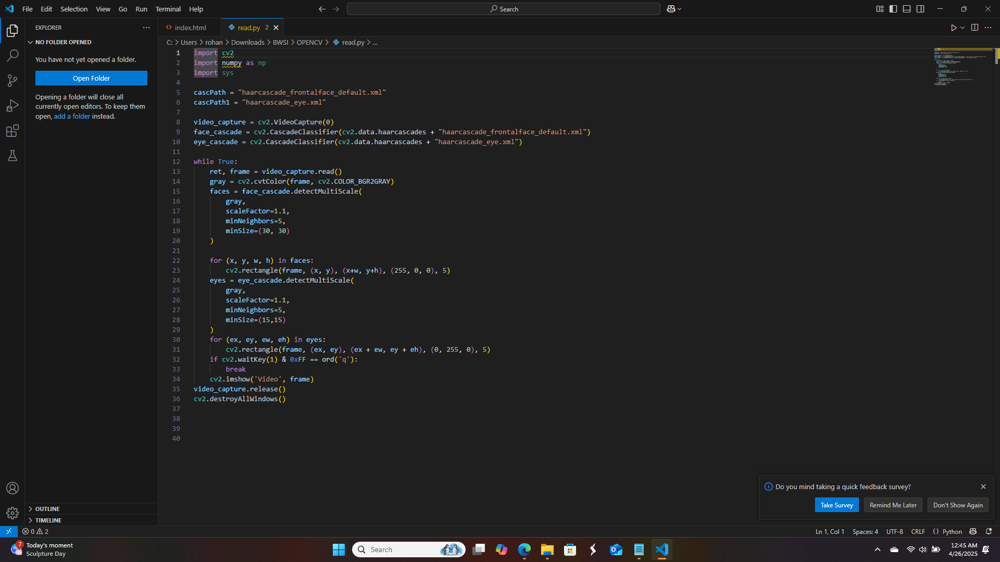

Welcome to my capstone project! For my MIT capstone project I created a face/eye detecting software using OpenCV and Python, taking in factors like gray scale for the imaging and BGR for the frame around the features of your face. Because this was somewhat simple, I created this website to convey the process of my work.
This project was made within Visual Studio Code and with the help of one or two tutorials I learned how to do it. This program uses OpenCV which, most popularly, allows you to use your webcam to run programs. This program also defines the dimensions of the frames around your faces/eyes and includes information on the feature of them using gray scale and BGR. It gains intel from the haarcascade files which implement the basic strucutre of the face/eyes so that the program can detect it and the last few pieces of code are for the function of the program to end. To explain, if cv2.waitKey(1) &0xFF == ord('q'): break. This means that once the 'q' key is pressed, the window (OpenCV) will close. 